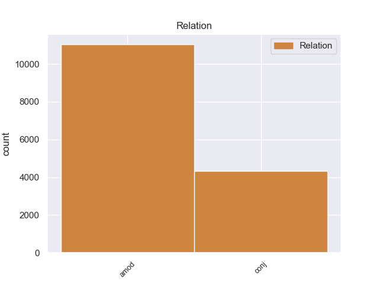
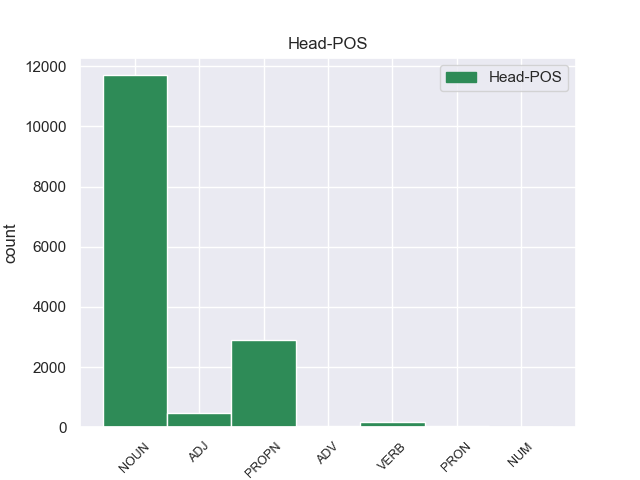
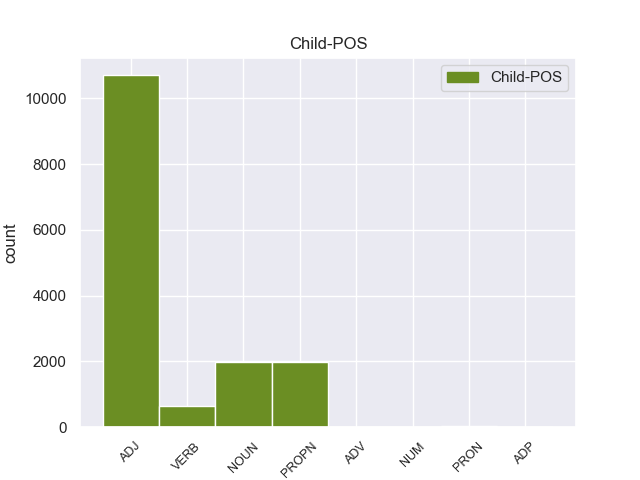

Distribution of features within this leaf



Agreement Rules sorted by frequency.
- When the dependent token is the adjectival modifier(amod) of the head token, and the head token is NOUN and the dependent token is ADJ.
1 उन्होंने _ _ _ _ 0 _ _ _
2 यहां _ _ _ _ 0 _ _ _
3 वेटिकन _ _ _ _ 0 _ _ _
4 दूतावास _ _ _ _ 0 _ _ _
5 में _ _ _ _ 0 _ _ _
6 एक _ _ _ _ 0 _ _ _
7 शोक _ _ _ _ 0 _ _ _
8 पुस्तिका _ _ _ _ 0 _ _ _
9 पर _ _ _ _ 0 _ _ _
10 हस्ताक्षर _ _ _ _ 0 _ _ _
11 कर _ _ _ _ 0 _ _ _
12 पोप _ _ _ _ 0 _ _ _
13 जॉन _ _ _ _ 0 _ _ _
14 पॉल _ _ _ _ 0 _ _ _
15 द्वितीय _ _ _ _ 0 _ _ _
16 के _ _ _ _ 0 _ _ _
17 निधन _ _ _ _ 0 _ _ _
18 पर _ _ _ _ 0 _ _ _
19 गहरा गहरा ADJ JJ Case=Nom|Gender=Masc|Number=Sing 20 amod _ ChunkId=NP8|ChunkType=child|Translit=gaharā
20 दुख दुख NOUN NN Case=Nom|Gender=Masc|Number=Sing|Person=3 0 _ _ _
21 प्रकट _ _ _ _ 0 _ _ _
22 किया _ _ _ _ 0 _ _ _
23 । _ _ _ _ 0 _ _ _
1 उन्होंने _ _ _ _ 0 _ _ _
2 कहा _ _ _ _ 0 _ _ _
3 कि _ _ _ _ 0 _ _ _
4 भारत भारत PROPN NNP Case=Nom|Gender=Masc|Number=Sing|Person=3 0 _ _ _
5 और _ _ _ _ 0 _ _ _
6 चीन चीन PROPN NNP Case=Nom|Gender=Masc|Number=Sing|Person=3 4 conj _ ChunkId=NP3|ChunkType=head|Tam=0|Translit=cīna|Vib=0
7 सर्वाधिक _ _ _ _ 0 _ _ _
8 आबादी _ _ _ _ 0 _ _ _
9 वाले _ _ _ _ 0 _ _ _
10 देश _ _ _ _ 0 _ _ _
11 हैं _ _ _ _ 0 _ _ _
12 । _ _ _ _ 0 _ _ _
1 अपने _ _ _ _ 0 _ _ _
2 चार _ _ _ _ 0 _ _ _
3 - _ _ _ _ 0 _ _ _
4 दिवसीय _ _ _ _ 0 _ _ _
5 भारत _ _ _ _ 0 _ _ _
6 दौरे _ _ _ _ 0 _ _ _
7 के _ _ _ _ 0 _ _ _
8 दौरान _ _ _ _ 0 _ _ _
9 वे _ _ _ _ 0 _ _ _
10 भारतीय _ _ _ _ 0 _ _ _
11 नेताओं _ _ _ _ 0 _ _ _
12 से _ _ _ _ 0 _ _ _
13 सीमा _ _ _ _ 0 _ _ _
14 विवाद विवाद NOUN NN Case=Acc|Gender=Masc|Number=Sing|Person=3 0 _ _ _
15 और _ _ _ _ 0 _ _ _
16 अन्य _ _ _ _ 0 _ _ _
17 द्विपक्षीय _ _ _ _ 0 _ _ _
18 मसलों मसला NOUN NN Case=Acc|Gender=Masc|Number=Plur|Person=3 14 conj _ ChunkId=NP6|ChunkType=head|Tam=0|Translit=masaloṁ|Vib=0_पर
19 पर _ _ _ _ 0 _ _ _
20 बातचीत _ _ _ _ 0 _ _ _
21 करेंगे _ _ _ _ 0 _ _ _
22 । _ _ _ _ 0 _ _ _
1 दांडी _ _ _ _ 0 _ _ _
2 मार्च _ _ _ _ 0 _ _ _
3 की _ _ _ _ 0 _ _ _
4 बरसी _ _ _ _ 0 _ _ _
5 के _ _ _ _ 0 _ _ _
6 मौके _ _ _ _ 0 _ _ _
7 पर _ _ _ _ 0 _ _ _
8 आयोजित आयोजित ADJ JJ Case=Acc 9 amod _ ChunkId=JJP|ChunkType=head|Translit=āyojita
9 मार्च मार्च PROPN NNP Case=Acc|Gender=Masc|Number=Sing|Person=3 0 _ _ _
10 को _ _ _ _ 0 _ _ _
11 सफल _ _ _ _ 0 _ _ _
12 बनाने _ _ _ _ 0 _ _ _
13 में _ _ _ _ 0 _ _ _
14 कांग्रेसियों _ _ _ _ 0 _ _ _
15 की _ _ _ _ 0 _ _ _
16 भूमिका _ _ _ _ 0 _ _ _
17 की _ _ _ _ 0 _ _ _
18 महात्मा _ _ _ _ 0 _ _ _
19 गांधी _ _ _ _ 0 _ _ _
20 के _ _ _ _ 0 _ _ _
21 परपौत्र _ _ _ _ 0 _ _ _
22 तुषार _ _ _ _ 0 _ _ _
23 गांधी _ _ _ _ 0 _ _ _
24 भरपूर _ _ _ _ 0 _ _ _
25 सराहना _ _ _ _ 0 _ _ _
26 करते _ _ _ _ 0 _ _ _
27 हैं _ _ _ _ 0 _ _ _
28 । _ _ _ _ 0 _ _ _
1 उनका _ _ _ _ 0 _ _ _
2 कहना _ _ _ _ 0 _ _ _
3 है _ _ _ _ 0 _ _ _
4 कि _ _ _ _ 0 _ _ _
5 छोटे _ _ _ _ 0 _ _ _
6 शहरों _ _ _ _ 0 _ _ _
7 व _ _ _ _ 0 _ _ _
8 गाँवों _ _ _ _ 0 _ _ _
9 में _ _ _ _ 0 _ _ _
10 रहने रह VERB VM Case=Acc|Number=Plur|VerbForm=Inf 12 amod _ ChunkId=VGNN2|ChunkType=head|Tam=nA|Translit=rahane|Vib=ना_वाला
11 वाले _ _ _ _ 0 _ _ _
12 लोगों लोग NOUN NN Case=Acc|Gender=Masc|Number=Plur|Person=3 0 _ _ _
13 को _ _ _ _ 0 _ _ _
14 ट्रेन _ _ _ _ 0 _ _ _
15 के _ _ _ _ 0 _ _ _
16 जरिये _ _ _ _ 0 _ _ _
17 पर्यटन _ _ _ _ 0 _ _ _
18 की _ _ _ _ 0 _ _ _
19 कोई _ _ _ _ 0 _ _ _
20 सुविधा _ _ _ _ 0 _ _ _
21 नहीं _ _ _ _ 0 _ _ _
22 मिलती _ _ _ _ 0 _ _ _
23 । _ _ _ _ 0 _ _ _
1 ७० _ _ _ _ 0 _ _ _
2 वर्षीय _ _ _ _ 0 _ _ _
3 इस _ _ _ _ 0 _ _ _
4 अहिंसावादी अहिंसावादी ADJ JJ Case=Acc 0 _ _ _
5 तिब्बती तिब्बती ADJ JJ Case=Acc 4 amod _ ChunkId=NP|ChunkType=child|Translit=tibbatī
6 नेता _ _ _ _ 0 _ _ _
7 ने _ _ _ _ 0 _ _ _
8 यह _ _ _ _ 0 _ _ _
9 भी _ _ _ _ 0 _ _ _
10 कहा _ _ _ _ 0 _ _ _
11 कि _ _ _ _ 0 _ _ _
12 वे _ _ _ _ 0 _ _ _
13 चीन _ _ _ _ 0 _ _ _
14 से _ _ _ _ 0 _ _ _
15 अलगाव _ _ _ _ 0 _ _ _
16 की _ _ _ _ 0 _ _ _
17 बात _ _ _ _ 0 _ _ _
18 नहीं _ _ _ _ 0 _ _ _
19 कर _ _ _ _ 0 _ _ _
20 रहे _ _ _ _ 0 _ _ _
21 हैं _ _ _ _ 0 _ _ _
22 बल्कि _ _ _ _ 0 _ _ _
23 वे _ _ _ _ 0 _ _ _
24 तो _ _ _ _ 0 _ _ _
25 चीनी _ _ _ _ 0 _ _ _
26 संविधान _ _ _ _ 0 _ _ _
27 के _ _ _ _ 0 _ _ _
28 दायरे _ _ _ _ 0 _ _ _
29 में _ _ _ _ 0 _ _ _
30 ही _ _ _ _ 0 _ _ _
31 तिब्बत _ _ _ _ 0 _ _ _
32 समस्या _ _ _ _ 0 _ _ _
33 का _ _ _ _ 0 _ _ _
34 हल _ _ _ _ 0 _ _ _
35 चाहते _ _ _ _ 0 _ _ _
36 हैं _ _ _ _ 0 _ _ _
37 । _ _ _ _ 0 _ _ _
1 पर्यवेक्षकों _ _ _ _ 0 _ _ _
2 का _ _ _ _ 0 _ _ _
3 कहना _ _ _ _ 0 _ _ _
4 है _ _ _ _ 0 _ _ _
5 कि _ _ _ _ 0 _ _ _
6 इस _ _ _ _ 0 _ _ _
7 मार्च _ _ _ _ 0 _ _ _
8 के _ _ _ _ 0 _ _ _
9 दौरान _ _ _ _ 0 _ _ _
10 कांग्रेसियों _ _ _ _ 0 _ _ _
11 ने _ _ _ _ 0 _ _ _
12 भाजपा _ _ _ _ 0 _ _ _
13 का _ _ _ _ 0 _ _ _
14 जिक्र _ _ _ _ 0 _ _ _
15 करने _ _ _ _ 0 _ _ _
16 से _ _ _ _ 0 _ _ _
17 परहेज _ _ _ _ 0 _ _ _
18 कर _ _ _ _ 0 _ _ _
19 लोगों _ _ _ _ 0 _ _ _
20 में _ _ _ _ 0 _ _ _
21 यह _ _ _ _ 0 _ _ _
22 संदेश _ _ _ _ 0 _ _ _
23 दिया _ _ _ _ 0 _ _ _
24 कि _ _ _ _ 0 _ _ _
25 वह _ _ _ _ 0 _ _ _
26 गांधीवादी _ _ _ _ 0 _ _ _
27 विरासत _ _ _ _ 0 _ _ _
28 को _ _ _ _ 0 _ _ _
29 लेकर _ _ _ _ 0 _ _ _
30 भाजपा भाजपा PROPN NNP Case=Acc|Gender=Fem|Number=Sing|Person=3 0 _ _ _
31 या _ _ _ _ 0 _ _ _
32 किसी _ _ _ _ 0 _ _ _
33 अन्य _ _ _ _ 0 _ _ _
34 पार्टी पार्टी NOUN NN Case=Acc|Gender=Fem|Number=Sing|Person=3 30 conj _ ChunkId=NP12|ChunkType=head|Tam=0|Translit=pārṭī|Vib=0_से
35 से _ _ _ _ 0 _ _ _
36 टकराव _ _ _ _ 0 _ _ _
37 नहीं _ _ _ _ 0 _ _ _
38 चाहती _ _ _ _ 0 _ _ _
39 है _ _ _ _ 0 _ _ _
40 । _ _ _ _ 0 _ _ _
1 दलाई _ _ _ _ 0 _ _ _
2 लामा _ _ _ _ 0 _ _ _
3 ने _ _ _ _ 0 _ _ _
4 कहा _ _ _ _ 0 _ _ _
5 कि _ _ _ _ 0 _ _ _
6 मैं _ _ _ _ 0 _ _ _
7 तिब्बती _ _ _ _ 0 _ _ _
8 समस्या _ _ _ _ 0 _ _ _
9 का _ _ _ _ 0 _ _ _
10 सार्थक सार्थक ADJ JJ Case=Nom 0 _ _ _
11 और _ _ _ _ 0 _ _ _
12 मान्य मान्य ADJ JJ Case=Nom 10 conj _ ChunkId=JJP2|ChunkType=head|Translit=mānya
13 हल _ _ _ _ 0 _ _ _
14 ढूंढ़ने _ _ _ _ 0 _ _ _
15 की _ _ _ _ 0 _ _ _
16 कोशिश _ _ _ _ 0 _ _ _
17 में _ _ _ _ 0 _ _ _
18 हूं _ _ _ _ 0 _ _ _
19 । _ _ _ _ 0 _ _ _
1 ऐसा _ _ _ _ 0 _ _ _
2 होने _ _ _ _ 0 _ _ _
3 की _ _ _ _ 0 _ _ _
4 स्थिति _ _ _ _ 0 _ _ _
5 में _ _ _ _ 0 _ _ _
6 शिक्षकों _ _ _ _ 0 _ _ _
7 के _ _ _ _ 0 _ _ _
8 लिए _ _ _ _ 0 _ _ _
9 पाठ्य _ _ _ _ 0 _ _ _
10 - _ _ _ _ 0 _ _ _
11 पुस्तकों _ _ _ _ 0 _ _ _
12 के _ _ _ _ 0 _ _ _
13 कुछ _ _ _ _ 0 _ _ _
14 अंश _ _ _ _ 0 _ _ _
15 न _ _ _ _ 0 _ _ _
16 पढ़ाने पढ़ा VERB VM Case=Acc|VerbForm=Inf 0 _ _ _
17 और _ _ _ _ 0 _ _ _
18 कुछ _ _ _ _ 0 _ _ _
19 अलग _ _ _ _ 0 _ _ _
20 से _ _ _ _ 0 _ _ _
21 पढ़ाने पढ़ा VERB VM Case=Acc|Number=Plur|VerbForm=Inf 16 conj _ ChunkId=VGNN3|ChunkType=head|Tam=nA|Translit=paṛhāne|Vib=ना_जैसा
22 जैसे _ _ _ _ 0 _ _ _
23 दिशा _ _ _ _ 0 _ _ _
24 - _ _ _ _ 0 _ _ _
25 निर्देश _ _ _ _ 0 _ _ _
26 भी _ _ _ _ 0 _ _ _
27 जारी _ _ _ _ 0 _ _ _
28 किए _ _ _ _ 0 _ _ _
29 जा _ _ _ _ 0 _ _ _
30 सकते _ _ _ _ 0 _ _ _
31 हैं _ _ _ _ 0 _ _ _
32 । _ _ _ _ 0 _ _ _
1 बिहार _ _ _ _ 0 _ _ _
2 के _ _ _ _ 0 _ _ _
3 पुलिस _ _ _ _ 0 _ _ _
4 प्रमुख _ _ _ _ 0 _ _ _
5 आशीष _ _ _ _ 0 _ _ _
6 रंजन _ _ _ _ 0 _ _ _
7 सिन्हा _ _ _ _ 0 _ _ _
8 ने _ _ _ _ 0 _ _ _
9 शुक्रवार _ _ _ _ 0 _ _ _
10 को _ _ _ _ 0 _ _ _
11 कहा _ _ _ _ 0 _ _ _
12 कि _ _ _ _ 0 _ _ _
13 लोजपा _ _ _ _ 0 _ _ _
14 प्रमुख प्रमुख NOUN NN Case=Acc|Gender=Masc|Number=Sing|Person=3 0 _ _ _
15 और _ _ _ _ 0 _ _ _
16 केंद्रीय _ _ _ _ 0 _ _ _
17 मंत्री मंत्री PROPN NNP Case=Acc|Gender=Masc|Number=Sing|Person=3 14 conj _ ChunkId=NP6|ChunkType=head|Tam=0|Translit=maṁtrī|Vib=0
18 राम _ _ _ _ 0 _ _ _
19 विलास _ _ _ _ 0 _ _ _
20 पासवान _ _ _ _ 0 _ _ _
21 को _ _ _ _ 0 _ _ _
22 जेड _ _ _ _ 0 _ _ _
23 श्रेणी _ _ _ _ 0 _ _ _
24 की _ _ _ _ 0 _ _ _
25 सुरक्षा _ _ _ _ 0 _ _ _
26 के _ _ _ _ 0 _ _ _
27 तहत _ _ _ _ 0 _ _ _
28 दी _ _ _ _ 0 _ _ _
29 गई _ _ _ _ 0 _ _ _
30 बिहार _ _ _ _ 0 _ _ _
31 पुलिस _ _ _ _ 0 _ _ _
32 कमांडो _ _ _ _ 0 _ _ _
33 की _ _ _ _ 0 _ _ _
34 सेवा _ _ _ _ 0 _ _ _
35 वापस _ _ _ _ 0 _ _ _
36 नहीं _ _ _ _ 0 _ _ _
37 ली _ _ _ _ 0 _ _ _
38 जाएगी _ _ _ _ 0 _ _ _
39 । _ _ _ _ 0 _ _ _
1 वोल्कर _ _ _ _ 0 _ _ _
2 कमेटी _ _ _ _ 0 _ _ _
3 पर _ _ _ _ 0 _ _ _
4 भारत _ _ _ _ 0 _ _ _
5 में _ _ _ _ 0 _ _ _
6 मचे _ _ _ _ 0 _ _ _
7 तूफान _ _ _ _ 0 _ _ _
8 का _ _ _ _ 0 _ _ _
9 जो _ _ _ _ 0 _ _ _
10 भी _ _ _ _ 0 _ _ _
11 नतीजा _ _ _ _ 0 _ _ _
12 निकले _ _ _ _ 0 _ _ _
13 लेकिन _ _ _ _ 0 _ _ _
14 इस _ _ _ _ 0 _ _ _
15 रिपोर्ट _ _ _ _ 0 _ _ _
16 को _ _ _ _ 0 _ _ _
17 लिखने लिख VERB VM Case=Acc|Number=Sing|VerbForm=Inf 20 amod _ ChunkId=VGNN|ChunkType=head|Tam=nA|Translit=likhane|Vib=ना_वाला
18 वाले _ _ _ _ 0 _ _ _
19 पॉल _ _ _ _ 0 _ _ _
20 वोल्कर वोल्कर PROPN NNP Case=Acc|Gender=Masc|Number=Sing|Person=3 0 _ _ _
21 ने _ _ _ _ 0 _ _ _
22 एक _ _ _ _ 0 _ _ _
23 सनसनीखेज _ _ _ _ 0 _ _ _
24 रहस्योद्घाटन _ _ _ _ 0 _ _ _
25 में _ _ _ _ 0 _ _ _
26 कहा _ _ _ _ 0 _ _ _
27 है _ _ _ _ 0 _ _ _
28 कि _ _ _ _ 0 _ _ _
29 वे _ _ _ _ 0 _ _ _
30 अपनी _ _ _ _ 0 _ _ _
31 रिपोर्ट _ _ _ _ 0 _ _ _
32 की _ _ _ _ 0 _ _ _
33 भाषा _ _ _ _ 0 _ _ _
34 में _ _ _ _ 0 _ _ _
35 परिवर्तन _ _ _ _ 0 _ _ _
36 को _ _ _ _ 0 _ _ _
37 तैयार _ _ _ _ 0 _ _ _
38 हो _ _ _ _ 0 _ _ _
39 गए _ _ _ _ 0 _ _ _
40 हैं _ _ _ _ 0 _ _ _
41 जिसमें _ _ _ _ 0 _ _ _
42 संयुक्त _ _ _ _ 0 _ _ _
43 राष्ट्र _ _ _ _ 0 _ _ _
44 के _ _ _ _ 0 _ _ _
45 महासचिव _ _ _ _ 0 _ _ _
46 कोफी _ _ _ _ 0 _ _ _
47 अन्नान _ _ _ _ 0 _ _ _
48 के _ _ _ _ 0 _ _ _
49 पुत्र _ _ _ _ 0 _ _ _
50 कोजो _ _ _ _ 0 _ _ _
51 अन्नान _ _ _ _ 0 _ _ _
52 के _ _ _ _ 0 _ _ _
53 कारोबार _ _ _ _ 0 _ _ _
54 का _ _ _ _ 0 _ _ _
55 जिक्र _ _ _ _ 0 _ _ _
56 है _ _ _ _ 0 _ _ _
57 । _ _ _ _ 0 _ _ _
1 दूसरी दूसरा ADJ QO Case=Nom|Gender=Fem|Number=Sing|NumType=Ord 2 amod _ ChunkId=NP|ChunkType=child|Translit=dūsarī
2 ओर ओर ADV NST AdpType=Post|Case=Nom|Gender=Fem|Number=Sing|Person=3 0 _ _ _
3 पाकिस्तान _ _ _ _ 0 _ _ _
4 भारत _ _ _ _ 0 _ _ _
5 को _ _ _ _ 0 _ _ _
6 इस _ _ _ _ 0 _ _ _
7 परियोजना _ _ _ _ 0 _ _ _
8 की _ _ _ _ 0 _ _ _
9 सुरक्षा _ _ _ _ 0 _ _ _
10 का _ _ _ _ 0 _ _ _
11 आश्वासन _ _ _ _ 0 _ _ _
12 देता _ _ _ _ 0 _ _ _
13 रहा _ _ _ _ 0 _ _ _
14 है _ _ _ _ 0 _ _ _
15 । _ _ _ _ 0 _ _ _
1 राष्ट्रपति _ _ _ _ 0 _ _ _
2 ने _ _ _ _ 0 _ _ _
3 कहा _ _ _ _ 0 _ _ _
4 कि _ _ _ _ 0 _ _ _
5 परंपरागत _ _ _ _ 0 _ _ _
6 जल _ _ _ _ 0 _ _ _
7 स्रोतों _ _ _ _ 0 _ _ _
8 को _ _ _ _ 0 _ _ _
9 दोबारा _ _ _ _ 0 _ _ _
10 जीवित _ _ _ _ 0 _ _ _
11 करने कर VERB VM Case=Acc|VerbForm=Inf 0 _ _ _
12 और _ _ _ _ 0 _ _ _
13 जल _ _ _ _ 0 _ _ _
14 संरक्षण संरक्षण NOUN NN Case=Acc|Gender=Masc|Number=Sing|Person=3 11 conj _ ChunkId=NP3|ChunkType=head|Tam=0|Translit=saṁrakṣaṇa|Vib=0_से
15 से _ _ _ _ 0 _ _ _
16 तीन _ _ _ _ 0 _ _ _
17 - _ _ _ _ 0 _ _ _
18 चार _ _ _ _ 0 _ _ _
19 साल _ _ _ _ 0 _ _ _
20 के _ _ _ _ 0 _ _ _
21 लिए _ _ _ _ 0 _ _ _
22 60 _ _ _ _ 0 _ _ _
23 लाख _ _ _ _ 0 _ _ _
24 रोजगार _ _ _ _ 0 _ _ _
25 के _ _ _ _ 0 _ _ _
26 अवसरों _ _ _ _ 0 _ _ _
27 का _ _ _ _ 0 _ _ _
28 सृजन _ _ _ _ 0 _ _ _
29 हो _ _ _ _ 0 _ _ _
30 सकता _ _ _ _ 0 _ _ _
31 है _ _ _ _ 0 _ _ _
32 और _ _ _ _ 0 _ _ _
33 यह _ _ _ _ 0 _ _ _
34 लक्ष्य _ _ _ _ 0 _ _ _
35 पूरा _ _ _ _ 0 _ _ _
36 हो _ _ _ _ 0 _ _ _
37 जाने _ _ _ _ 0 _ _ _
38 के _ _ _ _ 0 _ _ _
39 बाद _ _ _ _ 0 _ _ _
40 इसके _ _ _ _ 0 _ _ _
41 रख _ _ _ _ 0 _ _ _
42 - _ _ _ _ 0 _ _ _
43 रखाव _ _ _ _ 0 _ _ _
44 में _ _ _ _ 0 _ _ _
45 भी _ _ _ _ 0 _ _ _
46 लोगों _ _ _ _ 0 _ _ _
47 को _ _ _ _ 0 _ _ _
48 रोजगार _ _ _ _ 0 _ _ _
49 मिलेगा _ _ _ _ 0 _ _ _
50 । _ _ _ _ 0 _ _ _
1 अनारा _ _ _ _ 0 _ _ _
2 ने _ _ _ _ 0 _ _ _
3 राष्ट्रीय _ _ _ _ 0 _ _ _
4 मानवाधिकार _ _ _ _ 0 _ _ _
5 आयोग _ _ _ _ 0 _ _ _
6 और _ _ _ _ 0 _ _ _
7 राष्ट्रीय _ _ _ _ 0 _ _ _
8 महिला _ _ _ _ 0 _ _ _
9 आयोग _ _ _ _ 0 _ _ _
10 से _ _ _ _ 0 _ _ _
11 पुलिस _ _ _ _ 0 _ _ _
12 उत्पीड़न उत्पीड़न NOUN NN Case=Acc|Gender=Masc|Number=Sing|Person=3 0 _ _ _
13 और _ _ _ _ 0 _ _ _
14 अवैध _ _ _ _ 0 _ _ _
15 तरीके _ _ _ _ 0 _ _ _
16 से _ _ _ _ 0 _ _ _
17 गिरफ्तार _ _ _ _ 0 _ _ _
18 करने कर VERB VM Case=Acc|Number=Sing|VerbForm=Inf 12 conj _ ChunkId=VGNN|ChunkType=head|Tam=nA|Translit=karane|Vib=ना_का
19 की _ _ _ _ 0 _ _ _
20 शिकायत _ _ _ _ 0 _ _ _
21 करने _ _ _ _ 0 _ _ _
22 के _ _ _ _ 0 _ _ _
23 लिए _ _ _ _ 0 _ _ _
24 दिल्ली _ _ _ _ 0 _ _ _
25 जाने _ _ _ _ 0 _ _ _
26 की _ _ _ _ 0 _ _ _
27 इजाजत _ _ _ _ 0 _ _ _
28 मांगी _ _ _ _ 0 _ _ _
29 थी _ _ _ _ 0 _ _ _
30 । _ _ _ _ 0 _ _ _
1 वामपंथियों _ _ _ _ 0 _ _ _
2 का _ _ _ _ 0 _ _ _
3 कहना _ _ _ _ 0 _ _ _
4 है _ _ _ _ 0 _ _ _
5 कि _ _ _ _ 0 _ _ _
6 ईरान _ _ _ _ 0 _ _ _
7 हमारा _ _ _ _ 0 _ _ _
8 पारंपरिक _ _ _ _ 0 _ _ _
9 मित्र _ _ _ _ 0 _ _ _
10 देश _ _ _ _ 0 _ _ _
11 है _ _ _ _ 0 _ _ _
12 और _ _ _ _ 0 _ _ _
13 मध्य _ _ _ _ 0 _ _ _
14 पूर्व पूर्व ADJ JJ Case=Acc|Gender=Masc|Number=Sing|Person=3 0 _ _ _
15 व _ _ _ _ 0 _ _ _
16 खाड़ी खाडी NOUN NN Case=Acc|Gender=Fem|Number=Sing|Person=3 14 conj _ ChunkId=NP6|ChunkType=head|Tam=0|Translit=khāṛī|Vib=0_का
17 के _ _ _ _ 0 _ _ _
18 देशों _ _ _ _ 0 _ _ _
19 में _ _ _ _ 0 _ _ _
20 किसी _ _ _ _ 0 _ _ _
21 प्रकार _ _ _ _ 0 _ _ _
22 की _ _ _ _ 0 _ _ _
23 क्षेत्रीय _ _ _ _ 0 _ _ _
24 अस्थिरता _ _ _ _ 0 _ _ _
25 का _ _ _ _ 0 _ _ _
26 हमारे _ _ _ _ 0 _ _ _
27 देश _ _ _ _ 0 _ _ _
28 पर _ _ _ _ 0 _ _ _
29 असर _ _ _ _ 0 _ _ _
30 पड़ेगा _ _ _ _ 0 _ _ _
31 । _ _ _ _ 0 _ _ _
1 इसी _ _ _ _ 0 _ _ _
2 तरह _ _ _ _ 0 _ _ _
3 इंडिया _ _ _ _ 0 _ _ _
4 शाइनिंग _ _ _ _ 0 _ _ _
5 अभियान _ _ _ _ 0 _ _ _
6 पर _ _ _ _ 0 _ _ _
7 कैग _ _ _ _ 0 _ _ _
8 ने _ _ _ _ 0 _ _ _
9 अपनी _ _ _ _ 0 _ _ _
10 रिपोर्ट _ _ _ _ 0 _ _ _
11 में _ _ _ _ 0 _ _ _
12 कहा _ _ _ _ 0 _ _ _
13 कि _ _ _ _ 0 _ _ _
14 भारतीय _ _ _ _ 0 _ _ _
15 संविधान _ _ _ _ 0 _ _ _
16 के _ _ _ _ 0 _ _ _
17 अनुसार _ _ _ _ 0 _ _ _
18 बजट _ _ _ _ 0 _ _ _
19 में _ _ _ _ 0 _ _ _
20 दिखाए _ _ _ _ 0 _ _ _
21 गए _ _ _ _ 0 _ _ _
22 खर्च _ _ _ _ 0 _ _ _
23 के _ _ _ _ 0 _ _ _
24 अतिरिक्त _ _ _ _ 0 _ _ _
25 और _ _ _ _ 0 _ _ _
26 किसी कोई PRON PRP Case=Acc|Number=Sing|Person=3|PronType=Prs 27 amod _ ChunkId=NP9|ChunkType=child|Tam=0|Translit=kisī|Vib=0
27 प्रकार प्रकार NOUN NN Case=Acc|Gender=Masc|Number=Sing|Person=3 0 _ _ _
28 का _ _ _ _ 0 _ _ _
29 खर्च _ _ _ _ 0 _ _ _
30 नहीं _ _ _ _ 0 _ _ _
31 किया _ _ _ _ 0 _ _ _
32 जाना _ _ _ _ 0 _ _ _
33 चाहिए _ _ _ _ 0 _ _ _
34 और _ _ _ _ 0 _ _ _
35 यदि _ _ _ _ 0 _ _ _
36 करना _ _ _ _ 0 _ _ _
37 अनिवार्य _ _ _ _ 0 _ _ _
38 हो _ _ _ _ 0 _ _ _
39 तो _ _ _ _ 0 _ _ _
40 अनुपूरक _ _ _ _ 0 _ _ _
41 माँग _ _ _ _ 0 _ _ _
42 के _ _ _ _ 0 _ _ _
43 रूप _ _ _ _ 0 _ _ _
44 में _ _ _ _ 0 _ _ _
45 उसे _ _ _ _ 0 _ _ _
46 संसद _ _ _ _ 0 _ _ _
47 के _ _ _ _ 0 _ _ _
48 समक्ष _ _ _ _ 0 _ _ _
49 अनुमोदन _ _ _ _ 0 _ _ _
50 के _ _ _ _ 0 _ _ _
51 लिए _ _ _ _ 0 _ _ _
52 प्रस्तुत _ _ _ _ 0 _ _ _
53 किया _ _ _ _ 0 _ _ _
54 जाना _ _ _ _ 0 _ _ _
55 चाहिए _ _ _ _ 0 _ _ _
56 । _ _ _ _ 0 _ _ _
1 दोनों _ _ _ _ 0 _ _ _
2 के _ _ _ _ 0 _ _ _
3 बीच _ _ _ _ 0 _ _ _
4 चली _ _ _ _ 0 _ _ _
5 एक _ _ _ _ 0 _ _ _
6 घंटे _ _ _ _ 0 _ _ _
7 की _ _ _ _ 0 _ _ _
8 बैठक _ _ _ _ 0 _ _ _
9 में _ _ _ _ 0 _ _ _
10 उन वह PRON PRP Case=Acc|Gender=Masc|Number=Sing|Person=3|Polite=Form|PronType=Prs 0 _ _ _
11 पर _ _ _ _ 0 _ _ _
12 व _ _ _ _ 0 _ _ _
13 उनके _ _ _ _ 0 _ _ _
14 परिवार परिवार NOUN NN Case=Acc|Gender=Masc|Number=Sing|Person=3 10 conj _ ChunkId=NP6|ChunkType=head|Tam=0|Translit=parivāra|Vib=0_पर
15 पर _ _ _ _ 0 _ _ _
16 हुए _ _ _ _ 0 _ _ _
17 हमलों _ _ _ _ 0 _ _ _
18 पर _ _ _ _ 0 _ _ _
19 भी _ _ _ _ 0 _ _ _
20 चर्चा _ _ _ _ 0 _ _ _
21 हुई _ _ _ _ 0 _ _ _
22 । _ _ _ _ 0 _ _ _
1 यह _ _ _ _ 0 _ _ _
2 अभी _ _ _ _ 0 _ _ _
3 तक _ _ _ _ 0 _ _ _
4 रहस्य _ _ _ _ 0 _ _ _
5 है _ _ _ _ 0 _ _ _
6 कि _ _ _ _ 0 _ _ _
7 राजधानी राजधानी NOUN NN Case=Acc|Gender=Fem|Number=Sing|Person=3 0 _ _ _
8 अथवा _ _ _ _ 0 _ _ _
9 आसपास आसपास ADV NST AdpType=Post|Case=Acc|Gender=Masc|Number=Sing|Person=3 7 conj _ AltTag=ADV-NOUN|ChunkId=NP5|ChunkType=head|Translit=āsapāsa|Vib=0_का
10 के _ _ _ _ 0 _ _ _
11 किस _ _ _ _ 0 _ _ _
12 शहर _ _ _ _ 0 _ _ _
13 में _ _ _ _ 0 _ _ _
14 उनसे _ _ _ _ 0 _ _ _
15 पूछताछ _ _ _ _ 0 _ _ _
16 चल _ _ _ _ 0 _ _ _
17 रही _ _ _ _ 0 _ _ _
18 है _ _ _ _ 0 _ _ _
19 । _ _ _ _ 0 _ _ _
1 श्रीकुमार _ _ _ _ 0 _ _ _
2 के _ _ _ _ 0 _ _ _
3 वकील _ _ _ _ 0 _ _ _
4 का _ _ _ _ 0 _ _ _
5 कहना _ _ _ _ 0 _ _ _
6 है _ _ _ _ 0 _ _ _
7 जब _ _ _ _ 0 _ _ _
8 गुजरात _ _ _ _ 0 _ _ _
9 सरकार _ _ _ _ 0 _ _ _
10 ने _ _ _ _ 0 _ _ _
11 पहले पहले ADV NST AdpType=Post|Case=Nom|Gender=Masc|Number=Sing|Person=3 13 amod _ AltTag=ADV-NOUN|ChunkId=NP5|ChunkType=head|Translit=pahale
12 तीन _ _ _ _ 0 _ _ _
13 बार बार NOUN NN Case=Nom|Gender=Fem|Number=Plur|Person=3 0 _ _ _
14 पदोन्नत _ _ _ _ 0 _ _ _
15 करते _ _ _ _ 0 _ _ _
16 समय _ _ _ _ 0 _ _ _
17 लंबित _ _ _ _ 0 _ _ _
18 आपराधिक _ _ _ _ 0 _ _ _
19 मामले _ _ _ _ 0 _ _ _
20 पर _ _ _ _ 0 _ _ _
21 विचार _ _ _ _ 0 _ _ _
22 नहीं _ _ _ _ 0 _ _ _
23 किया _ _ _ _ 0 _ _ _
24 , _ _ _ _ 0 _ _ _
25 तो _ _ _ _ 0 _ _ _
26 इस _ _ _ _ 0 _ _ _
27 बार _ _ _ _ 0 _ _ _
28 यह _ _ _ _ 0 _ _ _
29 मामला _ _ _ _ 0 _ _ _
30 इतना _ _ _ _ 0 _ _ _
31 महत्वपूर्ण _ _ _ _ 0 _ _ _
32 क्यों _ _ _ _ 0 _ _ _
33 माना _ _ _ _ 0 _ _ _
34 जा _ _ _ _ 0 _ _ _
35 रहा _ _ _ _ 0 _ _ _
36 है _ _ _ _ 0 _ _ _
37 । _ _ _ _ 0 _ _ _
1 मुख्यमंत्री _ _ _ _ 0 _ _ _
2 कैप्टन _ _ _ _ 0 _ _ _
3 अमरिंदर _ _ _ _ 0 _ _ _
4 सिंह _ _ _ _ 0 _ _ _
5 की _ _ _ _ 0 _ _ _
6 धुर _ _ _ _ 0 _ _ _
7 विरोधी विरोधी ADJ JJ Case=Acc 0 _ _ _
8 और _ _ _ _ 0 _ _ _
9 पंजाब _ _ _ _ 0 _ _ _
10 की _ _ _ _ 0 _ _ _
11 उप _ _ _ _ 0 _ _ _
12 - _ _ _ _ 0 _ _ _
13 मुख्यमंत्री मुख्यमंत्री PROPN NNP Case=Acc|Number=Sing|Person=3 7 conj _ ChunkId=NP3|ChunkType=head|Tam=0|Translit=mukhyamaṁtrī|Vib=0
14 राजेंद्र _ _ _ _ 0 _ _ _
15 कौर _ _ _ _ 0 _ _ _
16 भट्ठल _ _ _ _ 0 _ _ _
17 के _ _ _ _ 0 _ _ _
18 एक _ _ _ _ 0 _ _ _
19 बार _ _ _ _ 0 _ _ _
20 फिर _ _ _ _ 0 _ _ _
21 दिल्ली _ _ _ _ 0 _ _ _
22 पंहुचने _ _ _ _ 0 _ _ _
23 से _ _ _ _ 0 _ _ _
24 राज्य _ _ _ _ 0 _ _ _
25 की _ _ _ _ 0 _ _ _
26 सियासत _ _ _ _ 0 _ _ _
27 का _ _ _ _ 0 _ _ _
28 पारा _ _ _ _ 0 _ _ _
29 जल्द _ _ _ _ 0 _ _ _
30 ही _ _ _ _ 0 _ _ _
31 फिर _ _ _ _ 0 _ _ _
32 चढ़ने _ _ _ _ 0 _ _ _
33 के _ _ _ _ 0 _ _ _
34 आसार _ _ _ _ 0 _ _ _
35 पैदा _ _ _ _ 0 _ _ _
36 हो _ _ _ _ 0 _ _ _
37 गए _ _ _ _ 0 _ _ _
38 हैं _ _ _ _ 0 _ _ _
39 । _ _ _ _ 0 _ _ _
1 राष्ट्रपति _ _ _ _ 0 _ _ _
2 मुशर्रफ _ _ _ _ 0 _ _ _
3 ने _ _ _ _ 0 _ _ _
4 पकड़े _ _ _ _ 0 _ _ _
5 गए _ _ _ _ 0 _ _ _
6 आतंकी _ _ _ _ 0 _ _ _
7 का _ _ _ _ 0 _ _ _
8 नाम _ _ _ _ 0 _ _ _
9 नहीं _ _ _ _ 0 _ _ _
10 बताया _ _ _ _ 0 _ _ _
11 लेकिन _ _ _ _ 0 _ _ _
12 ' _ _ _ _ 0 _ _ _
13 द _ _ _ _ 0 _ _ _
14 पाकिस्तान _ _ _ _ 0 _ _ _
15 अब्जर्वर _ _ _ _ 0 _ _ _
16 ' _ _ _ _ 0 _ _ _
17 नामक _ _ _ _ 0 _ _ _
18 दैनिक _ _ _ _ 0 _ _ _
19 ने _ _ _ _ 0 _ _ _
20 एक _ _ _ _ 0 _ _ _
21 अधिकारी _ _ _ _ 0 _ _ _
22 के _ _ _ _ 0 _ _ _
23 हवाले _ _ _ _ 0 _ _ _
24 से _ _ _ _ 0 _ _ _
25 लिखा _ _ _ _ 0 _ _ _
26 है _ _ _ _ 0 _ _ _
27 कि _ _ _ _ 0 _ _ _
28 यह _ _ _ _ 0 _ _ _
29 और और ADJ JJ Case=Nom 30 amod _ ChunkId=NP8|ChunkType=child|Translit=aura
30 कोई कोई PRON PRP Case=Nom|Number=Sing|Person=3|PronType=Prs 0 _ _ _
31 नहीं _ _ _ _ 0 _ _ _
32 कुख्यात _ _ _ _ 0 _ _ _
33 अहमद _ _ _ _ 0 _ _ _
34 खलफान _ _ _ _ 0 _ _ _
35 घैलानी _ _ _ _ 0 _ _ _
36 है _ _ _ _ 0 _ _ _
37 । _ _ _ _ 0 _ _ _
1 लेकिन _ _ _ _ 0 _ _ _
2 संस्थान _ _ _ _ 0 _ _ _
3 में _ _ _ _ 0 _ _ _
4 कायर्रत _ _ _ _ 0 _ _ _
5 कोई कोई PRON PRP Case=Nom|Number=Sing|Person=3|PronType=Prs 7 amod _ ChunkId=NP2|ChunkType=child|Tam=0|Translit=koī|Vib=0
6 अहमद _ _ _ _ 0 _ _ _
7 हुसैन हुसैन PROPN NNP Case=Nom|Gender=Masc|Number=Sing|Person=3 0 _ _ _
8 या _ _ _ _ 0 _ _ _
9 आबिद _ _ _ _ 0 _ _ _
10 हुसैन _ _ _ _ 0 _ _ _
11 नामक _ _ _ _ 0 _ _ _
12 अधिकारी _ _ _ _ 0 _ _ _
13 अभी _ _ _ _ 0 _ _ _
14 तक _ _ _ _ 0 _ _ _
15 नहीं _ _ _ _ 0 _ _ _
16 पाया _ _ _ _ 0 _ _ _
17 गया _ _ _ _ 0 _ _ _
18 । _ _ _ _ 0 _ _ _
1 अंबानी _ _ _ _ 0 _ _ _
2 ने _ _ _ _ 0 _ _ _
3 कहा _ _ _ _ 0 _ _ _
4 कि _ _ _ _ 0 _ _ _
5 कंपनी _ _ _ _ 0 _ _ _
6 तेल _ _ _ _ 0 _ _ _
7 व _ _ _ _ 0 _ _ _
8 गैस _ _ _ _ 0 _ _ _
9 खोजने _ _ _ _ 0 _ _ _
10 के _ _ _ _ 0 _ _ _
11 मद _ _ _ _ 0 _ _ _
12 में _ _ _ _ 0 _ _ _
13 अगले अगला ADJ JJ Case=Acc|Gender=Masc|Number=Plur 14 amod _ ChunkId=NP6|ChunkType=child|Translit=agale
14 24 24 NUM QC Case=Acc|NumType=Card 0 _ _ _
15 से _ _ _ _ 0 _ _ _
16 30 _ _ _ _ 0 _ _ _
17 महीनों _ _ _ _ 0 _ _ _
18 में _ _ _ _ 0 _ _ _
19 2,500 _ _ _ _ 0 _ _ _
20 करोड़ _ _ _ _ 0 _ _ _
21 रुपये _ _ _ _ 0 _ _ _
22 और _ _ _ _ 0 _ _ _
23 निवेश _ _ _ _ 0 _ _ _
24 करेगी _ _ _ _ 0 _ _ _
25 । _ _ _ _ 0 _ _ _
1 उन्होंने _ _ _ _ 0 _ _ _
2 स्टेडियम _ _ _ _ 0 _ _ _
3 के _ _ _ _ 0 _ _ _
4 अंदर अंदर ADV NST AdpType=Post|Case=Nom|Gender=Masc|Number=Sing|Person=3 0 _ _ _
5 और _ _ _ _ 0 _ _ _
6 बाहर बाहर ADV NST AdpType=Post|Case=Nom|Gender=Masc|Number=Sing|Person=3 4 conj _ AltTag=ADV-NOUN|ChunkId=NP4|ChunkType=head|Translit=bāhara
7 तैनात _ _ _ _ 0 _ _ _
8 पुलिस _ _ _ _ 0 _ _ _
9 के _ _ _ _ 0 _ _ _
10 जवानों _ _ _ _ 0 _ _ _
11 पर _ _ _ _ 0 _ _ _
12 भी _ _ _ _ 0 _ _ _
13 पथराव _ _ _ _ 0 _ _ _
14 किया _ _ _ _ 0 _ _ _
15 । _ _ _ _ 0 _ _ _
1 600 _ _ _ _ 0 _ _ _
2 प्रजातियों प्रजाति NOUN NN Case=Acc|Gender=Fem|Number=Plur|Person=3 0 _ _ _
3 व _ _ _ _ 0 _ _ _
4 8000 8000 NUM QC Case=Acc|NumType=Card 2 conj _ ChunkId=NP2|ChunkType=head|Translit=8000|Vib=0_से
5 से _ _ _ _ 0 _ _ _
6 ज्यादा _ _ _ _ 0 _ _ _
7 पक्षियों _ _ _ _ 0 _ _ _
8 के _ _ _ _ 0 _ _ _
9 संग्रह _ _ _ _ 0 _ _ _
10 के _ _ _ _ 0 _ _ _
11 साथ _ _ _ _ 0 _ _ _
12 जुरोंग _ _ _ _ 0 _ _ _
13 बर्ड _ _ _ _ 0 _ _ _
14 पार्क _ _ _ _ 0 _ _ _
15 एशिया _ _ _ _ 0 _ _ _
16 - _ _ _ _ 0 _ _ _
17 प्रशांत _ _ _ _ 0 _ _ _
18 क्षेत्र _ _ _ _ 0 _ _ _
19 का _ _ _ _ 0 _ _ _
20 सबसे _ _ _ _ 0 _ _ _
21 बड़ा _ _ _ _ 0 _ _ _
22 पक्षी _ _ _ _ 0 _ _ _
23 पार्क _ _ _ _ 0 _ _ _
24 है _ _ _ _ 0 _ _ _
25 । _ _ _ _ 0 _ _ _
1 दिल्ली दिल्ली PROPN NNP Case=Acc|Gender=Fem|Number=Sing|Person=3 0 _ _ _
2 तथा _ _ _ _ 0 _ _ _
3 आसपास आसपास ADV NST AdpType=Post|Case=Acc|Gender=Masc|Number=Sing|Person=3 1 conj _ AltTag=ADV-NOUN|ChunkId=NP2|ChunkType=head|Translit=āsapāsa|Vib=0_का
4 के _ _ _ _ 0 _ _ _
5 क्षेत्रों _ _ _ _ 0 _ _ _
6 में _ _ _ _ 0 _ _ _
7 भी _ _ _ _ 0 _ _ _
8 अच्छी _ _ _ _ 0 _ _ _
9 बारिश _ _ _ _ 0 _ _ _
10 हुई _ _ _ _ 0 _ _ _
11 मगर _ _ _ _ 0 _ _ _
12 यह _ _ _ _ 0 _ _ _
13 मानसून _ _ _ _ 0 _ _ _
14 पूर्व _ _ _ _ 0 _ _ _
15 बारिश _ _ _ _ 0 _ _ _
16 है _ _ _ _ 0 _ _ _
17 । _ _ _ _ 0 _ _ _
1 रशीद _ _ _ _ 0 _ _ _
2 ने _ _ _ _ 0 _ _ _
3 बताया _ _ _ _ 0 _ _ _
4 कि _ _ _ _ 0 _ _ _
5 साबिरा _ _ _ _ 0 _ _ _
6 ने _ _ _ _ 0 _ _ _
7 जो _ _ _ _ 0 _ _ _
8 कदम _ _ _ _ 0 _ _ _
9 उठाया _ _ _ _ 0 _ _ _
10 वह वह PRON PRP Case=Nom|Number=Sing|Person=3|PronType=Prs 0 _ _ _
11 है _ _ _ _ 0 _ _ _
12 तो _ _ _ _ 0 _ _ _
13 गलत _ _ _ _ 0 _ _ _
14 ही _ _ _ _ 0 _ _ _
15 लेकिन _ _ _ _ 0 _ _ _
16 उसकी _ _ _ _ 0 _ _ _
17 जिद _ _ _ _ 0 _ _ _
18 के _ _ _ _ 0 _ _ _
19 आगे _ _ _ _ 0 _ _ _
20 लोगों _ _ _ _ 0 _ _ _
21 को _ _ _ _ 0 _ _ _
22 झुकना झुक VERB VM Case=Nom|Number=Sing|VerbForm=Inf|Voice=Act 10 conj _ ChunkId=VGF3|ChunkType=head|Stype=declarative|Tam=nA|Translit=jhukanā|Vib=ना_पड+या
23 ही _ _ _ _ 0 _ _ _
24 पड़ा _ _ _ _ 0 _ _ _
25 । _ _ _ _ 0 _ _ _
1 इससे _ _ _ _ 0 _ _ _
2 पहले _ _ _ _ 0 _ _ _
3 यह _ _ _ _ 0 _ _ _
4 रिकॉर्ड _ _ _ _ 0 _ _ _
5 सौरव _ _ _ _ 0 _ _ _
6 गांगुली गांगुली PROPN NNP Case=Acc|Gender=Masc|Number=Sing|Person=3 0 _ _ _
7 ( _ _ _ _ 0 _ _ _
8 एडीलेड _ _ _ _ 0 _ _ _
9 , _ _ _ _ 0 _ _ _
10 २००० _ _ _ _ 0 _ _ _
11 ) _ _ _ _ 0 _ _ _
12 तथा _ _ _ _ 0 _ _ _
13 सचिन _ _ _ _ 0 _ _ _
14 तेंदुलकर _ _ _ _ 0 _ _ _
15 ( _ _ _ _ 0 _ _ _
16 रावलपिंडी _ _ _ _ 0 _ _ _
17 , _ _ _ _ 0 _ _ _
18 २००४ _ _ _ _ 0 _ _ _
19 ) _ _ _ _ 0 _ _ _
20 के का ADP PSP AdpType=Post|Case=Acc|Gender=Masc|Number=Sing 6 conj _ ChunkId=FRAGP|ChunkType=head|Translit=ke
21 नाम _ _ _ _ 0 _ _ _
22 था _ _ _ _ 0 _ _ _
23 । _ _ _ _ 0 _ _ _
1 इन _ _ _ _ 0 _ _ _
2 विषयों _ _ _ _ 0 _ _ _
3 में _ _ _ _ 0 _ _ _
4 भारत _ _ _ _ 0 _ _ _
5 के _ _ _ _ 0 _ _ _
6 बदलते _ _ _ _ 0 _ _ _
7 जनसांख्यिकी _ _ _ _ 0 _ _ _
8 प्रोफाइल प्रोफाइल NOUN NN Case=Nom|Gender=Masc|Number=Plur|Person=3 0 _ _ _
9 , _ _ _ _ 0 _ _ _
10 स्वदेशी स्वदेशी ADJ JJ Case=Nom 8 conj _ ChunkId=JJP|ChunkType=head|SpaceAfter=No|Translit=svadeśī
11 , _ _ _ _ 0 _ _ _
12 सामाजिक _ _ _ _ 0 _ _ _
13 न्याय _ _ _ _ 0 _ _ _
14 और _ _ _ _ 0 _ _ _
15 गुरूजी _ _ _ _ 0 _ _ _
16 का _ _ _ _ 0 _ _ _
17 दर्शन _ _ _ _ 0 _ _ _
18 शामिल _ _ _ _ 0 _ _ _
19 हैं _ _ _ _ 0 _ _ _
20 । _ _ _ _ 0 _ _ _
1 इसमें _ _ _ _ 0 _ _ _
2 स्क्रैप _ _ _ _ 0 _ _ _
3 आयात _ _ _ _ 0 _ _ _
4 नीति नीति PROPN NNP Case=Acc|Gender=Fem|Number=Sing|Person=3 0 _ _ _
5 , _ _ _ _ 0 _ _ _
6 असम _ _ _ _ 0 _ _ _
7 व _ _ _ _ 0 _ _ _
8 नागालैंड _ _ _ _ 0 _ _ _
9 में _ _ _ _ 0 _ _ _
10 हाल _ _ _ _ 0 _ _ _
11 की _ _ _ _ 0 _ _ _
12 हिंसा _ _ _ _ 0 _ _ _
13 को _ _ _ _ 0 _ _ _
14 देखते _ _ _ _ 0 _ _ _
15 हुए _ _ _ _ 0 _ _ _
16 भारत _ _ _ _ 0 _ _ _
17 - _ _ _ _ 0 _ _ _
18 बांग्लादेश _ _ _ _ 0 _ _ _
19 सीमा _ _ _ _ 0 _ _ _
20 पर _ _ _ _ 0 _ _ _
21 बाड़ _ _ _ _ 0 _ _ _
22 लगाने लगा VERB VM Case=Acc|VerbForm=Inf 4 conj _ ChunkId=VGNN|ChunkType=head|Tam=nA|Translit=lagāne|Vib=ना
23 और _ _ _ _ 0 _ _ _
24 सीमा _ _ _ _ 0 _ _ _
25 पार _ _ _ _ 0 _ _ _
26 आतंकवाद _ _ _ _ 0 _ _ _
27 पर _ _ _ _ 0 _ _ _
28 चर्चा _ _ _ _ 0 _ _ _
29 हुई _ _ _ _ 0 _ _ _
30 । _ _ _ _ 0 _ _ _
1 यह _ _ _ _ 0 _ _ _
2 राज्य _ _ _ _ 0 _ _ _
3 में _ _ _ _ 0 _ _ _
4 स्थाई स्थाई ADJ JJ Case=Acc 0 _ _ _
5 और _ _ _ _ 0 _ _ _
6 कभी _ _ _ _ 0 _ _ _
7 न _ _ _ _ 0 _ _ _
8 खत्म _ _ _ _ 0 _ _ _
9 होने हो VERB VM Case=Acc|Number=Sing|VerbForm=Inf 4 conj _ ChunkId=VGNN|ChunkType=head|Tam=nA|Translit=hone|Vib=ना_वाला
10 वाली _ _ _ _ 0 _ _ _
11 शांति _ _ _ _ 0 _ _ _
12 को _ _ _ _ 0 _ _ _
13 स्थापित _ _ _ _ 0 _ _ _
14 करने _ _ _ _ 0 _ _ _
15 का _ _ _ _ 0 _ _ _
16 मौका _ _ _ _ 0 _ _ _
17 है _ _ _ _ 0 _ _ _
18 । _ _ _ _ 0 _ _ _
1 सम्मेलन _ _ _ _ 0 _ _ _
2 में _ _ _ _ 0 _ _ _
3 आए _ _ _ _ 0 _ _ _
4 विभिन्न _ _ _ _ 0 _ _ _
5 राज्यों _ _ _ _ 0 _ _ _
6 के _ _ _ _ 0 _ _ _
7 प्रतिनिधियों _ _ _ _ 0 _ _ _
8 ने _ _ _ _ 0 _ _ _
9 कहा _ _ _ _ 0 _ _ _
10 कि _ _ _ _ 0 _ _ _
11 दूर _ _ _ _ 0 _ _ _
12 - _ _ _ _ 0 _ _ _
13 दराज दराज ADV NST AdpType=Post|Case=Acc|Gender=Masc|Number=Sing|Person=3 0 _ _ _
14 या _ _ _ _ 0 _ _ _
15 हाशिए हाशिया NOUN NN Case=Acc|Gender=Masc|Number=Sing|Person=3 13 conj _ ChunkId=NP5|ChunkType=head|Tam=0|Translit=hāśie|Vib=0_का
16 के _ _ _ _ 0 _ _ _
17 गाँवों _ _ _ _ 0 _ _ _
18 में _ _ _ _ 0 _ _ _
19 रहने _ _ _ _ 0 _ _ _
20 वाले _ _ _ _ 0 _ _ _
21 बुजुर्गो _ _ _ _ 0 _ _ _
22 के _ _ _ _ 0 _ _ _
23 लिए _ _ _ _ 0 _ _ _
24 जिला _ _ _ _ 0 _ _ _
25 केंद्र _ _ _ _ 0 _ _ _
26 तक _ _ _ _ 0 _ _ _
27 आना _ _ _ _ 0 _ _ _
28 व्यवहारिक _ _ _ _ 0 _ _ _
29 रूप _ _ _ _ 0 _ _ _
30 से _ _ _ _ 0 _ _ _
31 संभव _ _ _ _ 0 _ _ _
32 नहीं _ _ _ _ 0 _ _ _
33 होगा _ _ _ _ 0 _ _ _
34 । _ _ _ _ 0 _ _ _
1 ' _ _ _ _ 0 _ _ _
2 राम _ _ _ _ 0 _ _ _
3 - _ _ _ _ 0 _ _ _
4 रोटी _ _ _ _ 0 _ _ _
5 पदयात्रा _ _ _ _ 0 _ _ _
6 ' _ _ _ _ 0 _ _ _
7 के _ _ _ _ 0 _ _ _
8 बाद _ _ _ _ 0 _ _ _
9 नई _ _ _ _ 0 _ _ _
10 पार्टी _ _ _ _ 0 _ _ _
11 बनाने _ _ _ _ 0 _ _ _
12 की _ _ _ _ 0 _ _ _
13 बात _ _ _ _ 0 _ _ _
14 से _ _ _ _ 0 _ _ _
15 इनकार _ _ _ _ 0 _ _ _
16 करते _ _ _ _ 0 _ _ _
17 हुए _ _ _ _ 0 _ _ _
18 उमा _ _ _ _ 0 _ _ _
19 ने _ _ _ _ 0 _ _ _
20 कहा _ _ _ _ 0 _ _ _
21 कि _ _ _ _ 0 _ _ _
22 यह _ _ _ _ 0 _ _ _
23 गैर _ _ _ _ 0 _ _ _
24 - _ _ _ _ 0 _ _ _
25 राजनीतिक _ _ _ _ 0 _ _ _
26 पदयात्रा _ _ _ _ 0 _ _ _
27 है _ _ _ _ 0 _ _ _
28 , _ _ _ _ 0 _ _ _
29 जिसे _ _ _ _ 0 _ _ _
30 वे वह PRON PRP Case=Nom|Number=Sing|Person=3|Polite=Form|PronType=Prs 0 _ _ _
31 और _ _ _ _ 0 _ _ _
32 पार्टी _ _ _ _ 0 _ _ _
33 महासचिव _ _ _ _ 0 _ _ _
34 अरुण _ _ _ _ 0 _ _ _
35 जेटली जेटली PROPN NNP Case=Nom|Number=Sing|Person=3 30 conj _ ChunkId=NP11|ChunkType=head|Tam=0|Translit=jeṭalī|Vib=0
36 आंध्र _ _ _ _ 0 _ _ _
37 प्रदेश _ _ _ _ 0 _ _ _
38 के _ _ _ _ 0 _ _ _
39 करीमनगर _ _ _ _ 0 _ _ _
40 से _ _ _ _ 0 _ _ _
41 शुरू _ _ _ _ 0 _ _ _
42 करने _ _ _ _ 0 _ _ _
43 वाले _ _ _ _ 0 _ _ _
44 थे _ _ _ _ 0 _ _ _
45 । _ _ _ _ 0 _ _ _
1 सूत्रों _ _ _ _ 0 _ _ _
2 का _ _ _ _ 0 _ _ _
3 यह _ _ _ _ 0 _ _ _
4 भी _ _ _ _ 0 _ _ _
5 दावा _ _ _ _ 0 _ _ _
6 है _ _ _ _ 0 _ _ _
7 कि _ _ _ _ 0 _ _ _
8 राजधानी _ _ _ _ 0 _ _ _
9 और _ _ _ _ 0 _ _ _
10 इसके _ _ _ _ 0 _ _ _
11 आस आस NOUN NSTC AdpType=Post|Case=Nom|Gender=Masc|Number=Sing|Person=3 0 _ _ _
12 - _ _ _ _ 0 _ _ _
13 पास पास ADP NST AdpType=Post|Case=Nom|Gender=Masc|Number=Sing|Person=3 11 conj _ AltTag=ADP-NOUN|ChunkId=NP5|ChunkType=child|Translit=pāsa
14 बब्बर _ _ _ _ 0 _ _ _
15 खालसा _ _ _ _ 0 _ _ _
16 ने _ _ _ _ 0 _ _ _
17 अपने _ _ _ _ 0 _ _ _
18 कुछ _ _ _ _ 0 _ _ _
19 ठिकाने _ _ _ _ 0 _ _ _
20 बना _ _ _ _ 0 _ _ _
21 लिए _ _ _ _ 0 _ _ _
22 थे _ _ _ _ 0 _ _ _
23 । _ _ _ _ 0 _ _ _
Disagree Examples:
1 यहाँ _ _ _ _ 0 _ _ _
2 लगने लग VERB VM Case=Acc|Number=Sing|VerbForm=Inf 7 amod _ ChunkId=VGNN|ChunkType=head|Tam=nA|Translit=lagane|Vib=ना_वाला
3 वाला _ _ _ _ 0 _ _ _
4 तीन _ _ _ _ 0 _ _ _
5 दिन _ _ _ _ 0 _ _ _
6 का _ _ _ _ 0 _ _ _
7 इज्तिमा इज्तिमा NOUN NN Case=Nom|Gender=Masc|Number=Sing|Person=3 0 _ _ _
8 पूरे _ _ _ _ 0 _ _ _
9 देश _ _ _ _ 0 _ _ _
10 के _ _ _ _ 0 _ _ _
11 लोगों _ _ _ _ 0 _ _ _
12 को _ _ _ _ 0 _ _ _
13 आमंत्रित _ _ _ _ 0 _ _ _
14 करता _ _ _ _ 0 _ _ _
15 है _ _ _ _ 0 _ _ _
16 । _ _ _ _ 0 _ _ _
1 यह _ _ _ _ 0 _ _ _
2 एक _ _ _ _ 0 _ _ _
3 प्रागैतिहासिक _ _ _ _ 0 _ _ _
4 स्थल स्थल NOUN NN Case=Acc|Gender=Masc|Number=Sing|Person=3 0 _ _ _
5 पर _ _ _ _ 0 _ _ _
6 है _ _ _ _ 0 _ _ _
7 और _ _ _ _ 0 _ _ _
8 विश्व _ _ _ _ 0 _ _ _
9 में _ _ _ _ 0 _ _ _
10 अपनी _ _ _ _ 0 _ _ _
11 तरह _ _ _ _ 0 _ _ _
12 का _ _ _ _ 0 _ _ _
13 एक _ _ _ _ 0 _ _ _
14 ही _ _ _ _ 0 _ _ _
15 संग्रहालय संग्रहालय NOUN NN Case=Nom|Gender=Masc|Number=Sing|Person=3 4 conj _ ChunkId=NP6|ChunkType=head|Tam=0|Translit=saṁgrahālaya|Vib=0
16 है _ _ _ _ 0 _ _ _
17 जो _ _ _ _ 0 _ _ _
18 प्रागैतिहासिक _ _ _ _ 0 _ _ _
19 चित्रकला _ _ _ _ 0 _ _ _
20 से _ _ _ _ 0 _ _ _
21 सज्जित _ _ _ _ 0 _ _ _
22 गुफाओं _ _ _ _ 0 _ _ _
23 के _ _ _ _ 0 _ _ _
24 समीप _ _ _ _ 0 _ _ _
25 है _ _ _ _ 0 _ _ _
26 । _ _ _ _ 0 _ _ _
1 शहर _ _ _ _ 0 _ _ _
2 के _ _ _ _ 0 _ _ _
3 बीच _ _ _ _ 0 _ _ _
4 स्थित स्थित ADJ JJ Case=Nom 5 amod _ ChunkId=JJP|ChunkType=head|Translit=sthita
5 चौक चौक PROPN NNP Case=Acc|Gender=Masc|Number=Sing|Person=3 0 _ _ _
6 में _ _ _ _ 0 _ _ _
7 पुरानी _ _ _ _ 0 _ _ _
8 मस्जिद _ _ _ _ 0 _ _ _
9 , _ _ _ _ 0 _ _ _
10 हवेलियाँ _ _ _ _ 0 _ _ _
11 अतीत _ _ _ _ 0 _ _ _
12 की _ _ _ _ 0 _ _ _
13 स्मृति _ _ _ _ 0 _ _ _
14 दिलाते _ _ _ _ 0 _ _ _
15 हैं _ _ _ _ 0 _ _ _
16 । _ _ _ _ 0 _ _ _
1 यहाँ _ _ _ _ 0 _ _ _
2 आप _ _ _ _ 0 _ _ _
3 चाँदी _ _ _ _ 0 _ _ _
4 के _ _ _ _ 0 _ _ _
5 आभूषण आभूषण NOUN NN Case=Nom|Gender=Masc|Number=Plur|Person=3 0 _ _ _
6 , _ _ _ _ 0 _ _ _
7 बीडवर्क बीडवर्क NOUN NN Case=Acc|Gender=Masc|Number=Sing|Person=3 5 conj _ ChunkId=NP5|ChunkType=head|SpaceAfter=No|Tam=0|Translit=bīḍavarka|Vib=0
8 , _ _ _ _ 0 _ _ _
9 कढ़ाई _ _ _ _ 0 _ _ _
10 का _ _ _ _ 0 _ _ _
11 काम _ _ _ _ 0 _ _ _
12 और _ _ _ _ 0 _ _ _
13 सीक्वन _ _ _ _ 0 _ _ _
14 का _ _ _ _ 0 _ _ _
15 काम _ _ _ _ 0 _ _ _
16 खूबसूरत _ _ _ _ 0 _ _ _
17 अंदाज _ _ _ _ 0 _ _ _
18 में _ _ _ _ 0 _ _ _
19 देख _ _ _ _ 0 _ _ _
20 और _ _ _ _ 0 _ _ _
21 खरीद _ _ _ _ 0 _ _ _
22 सकते _ _ _ _ 0 _ _ _
23 हैं _ _ _ _ 0 _ _ _
24 । _ _ _ _ 0 _ _ _
1 मुंबई _ _ _ _ 0 _ _ _
2 से _ _ _ _ 0 _ _ _
3 इटारसी _ _ _ _ 0 _ _ _
4 और _ _ _ _ 0 _ _ _
5 झाँसी _ _ _ _ 0 _ _ _
6 के _ _ _ _ 0 _ _ _
7 रास्ते _ _ _ _ 0 _ _ _
8 दिल्ली _ _ _ _ 0 _ _ _
9 जाने जा VERB VM Case=Acc|Number=Plur|VerbForm=Inf 12 amod _ ChunkId=VGNN|ChunkType=head|Tam=nA|Translit=jāne|Vib=ना_वाला
10 वाली _ _ _ _ 0 _ _ _
11 मुख्य _ _ _ _ 0 _ _ _
12 गाड़ियाँ गाड़ी NOUN NN Case=Nom|Gender=Fem|Number=Plur|Person=3 0 _ _ _
13 भोपाल _ _ _ _ 0 _ _ _
14 होकर _ _ _ _ 0 _ _ _
15 जाती _ _ _ _ 0 _ _ _
16 हैं _ _ _ _ 0 _ _ _
17 । _ _ _ _ 0 _ _ _